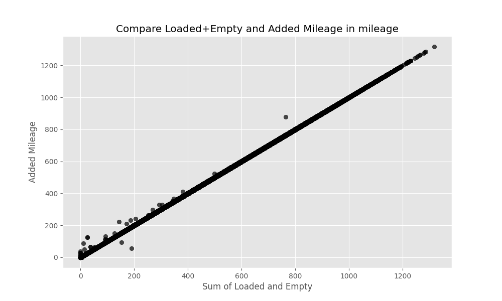
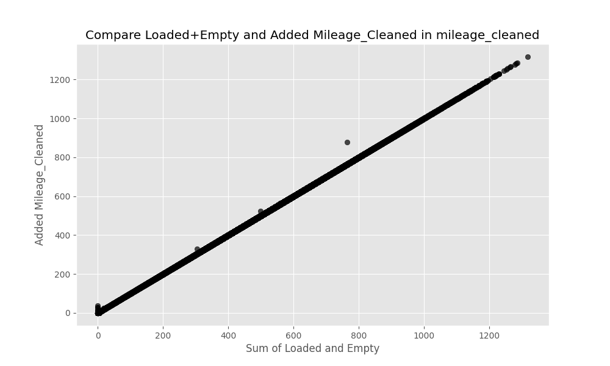
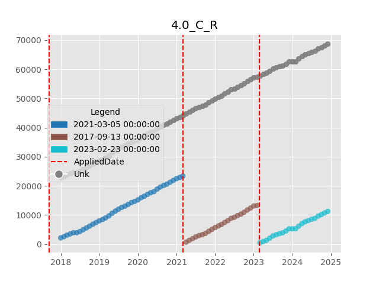
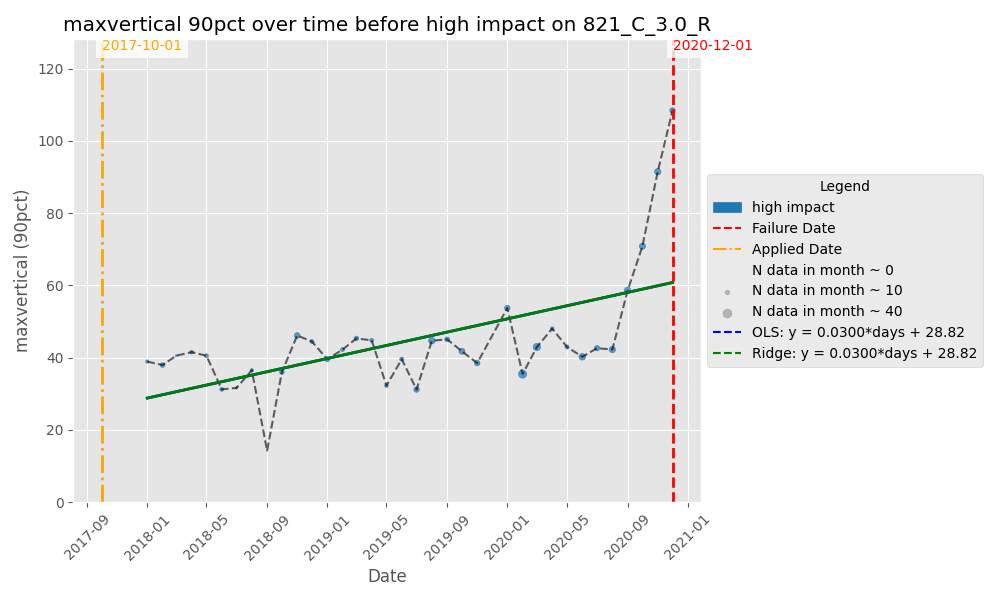
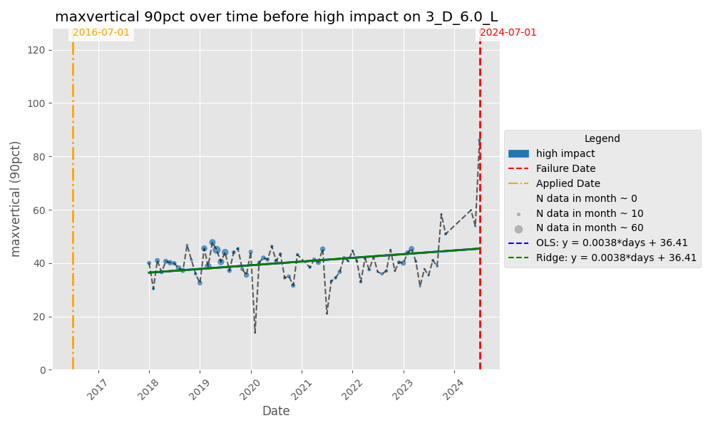
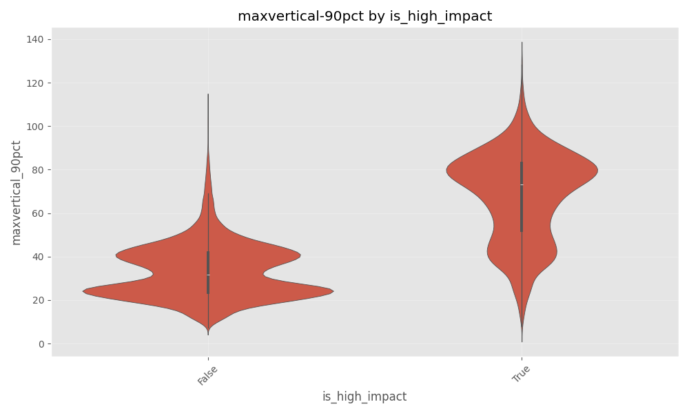
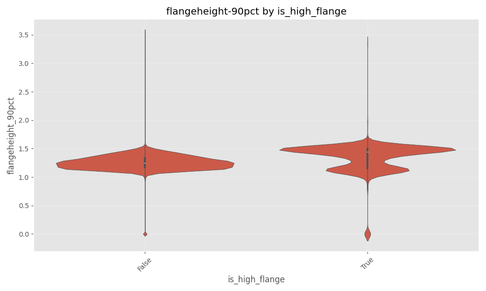
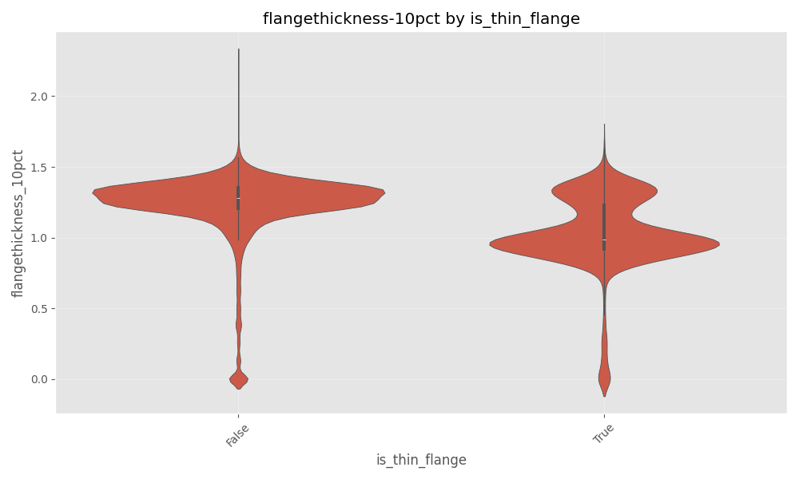

Predicting Wheel Failure on Rail Cars
In this post, I go into details of how I attempted to solve the problem to predict the likelihood of a train wheel failure in the upcoming months.
Introduction
Rail wheels are an important asset of the rail inventory, and any type of failure can be a safety hazard, even leading to derailment. Thus, regular maintainance and forward thinking predictive analytics plays a cruicial role in the safe operations of rail cars.
In this problem, there are 3 specific types of wheel failures that are being considered. Any other type of failure is grouped into one category ‘Other’. The 3 types are
- High Impact
- High Flange
- Thin Flange
Data
To uniquely identify a wheel for this problem, I looked at the following features: - Equipment (uniquely identified by the equipment number) - Truck (Uniquely identified by the column ‘truck’) - Axle number (Number to represent the axle within a truck) - Side (Left or Right wheel on the axle). - Applied Date (The date when the wheel was installed).
For this analysis 4 data sources are combined:
WILD data (Wheel Impact Load Detector)
Wild data consist of wheel impacts measured at different WILD stations spread across the network. It gives information about when the measurement was made, the impact (or load). Different columns give information about the max vertical impact, average vertical impact, dynamic ratio etc.
THD data (Truck Hunting Detector)
This dataset contains information indicating when the rail wheels are oscillating excessively. This is measured by hunting index.
WPD data (Wheel Profile Detector)
This dataset consists information about the measurements of the wheel. It includes flange height, flange width, slope etc.
Mileage Data
This dataset provides information about how many miles each equipment travelled each month. It was also pointed out that mileage information is only available with a 3 month lag, indicating that a sub-model is required to predict where how far each wheel would have travelled during the months that we need to predict.
Wheel Failure Data
We also have wheel failure data giving information about the month a particular wheel failed and the reason for failure.
The failure data contains information for each month. So, once a wheel is installed, we have information about the wheel till it failed or is replaced (all the rows for a wheel would have the column ‘failedin30days’ == 0 until the last row (unless it is replaced without failure).
The data for any particular wheel under the WILD, THD, and WPD would only be available if a wheel passes thru the sensor. So it may be possible that we don’t have any data for some months.
Data Processing Methodology
Given the data is a time series (for each wheel, historic data is available over a period of time), we could look at this problem as a signal processing problem.
Data Processing
Aggregation of data
I developed a function that aggregates data at a monthly level. I look at different aggregation methods including, mean, trimmed mean, median, 90 percentile, 10 percentile, etc. My reasoning are as following:
- the objective of this problem is to make a prediction for the upcoming month. The prediction is made at a montly level. So it makes sense to have the datra at the montlhy level.
- This procedure greatly reduces the memory requirements as we are now only storing the aggregated data (which is useful as I am using a processor with only 8 Gigs of RAM).
Methodology for Data Aggregation
I take raw WPD/THD/WILD time-series and rolling them up to one row per wheel per month, producing a bundle of summary stats (mean/median/std/percentiles/etc.)—plus optional trend (slope)—so those features can be joined to your wheel-level failure table for EDA or modeling.
The relevant functions to achieve this output include:
- _aggregate_single_group(…) — summarize one (wheel_id, month) group
Inputs (via the args tuple):
- (entity_id, month): the group key (e.g., a wheel_id and its recordmonth).
- group: the pandas DataFrame slice for that key.
- id_col, date_col, agg_date_col: column names for ID, raw timestamp, and month.
- agg_config: dict like {column_name: [list of stats]} that drives what to compute.
What it does:
Starts a result row = {id_col: entity_id, agg_date_col: month}.
For each col listed in agg_config (and present in group), it computes - The requested statistics, (e.g., mean, std, count, sum, median) - Percentiles: 10pct and 90pct via np.percentile(…) - Trimmed_mean - Slope via compute_slope(series, group[date_col]) (trend within the month)
Each stat is stored as f”{col}_{stat}” (e.g., averagevertical_mean).
Returns the single row dict (one per wheel×month group).
aggregate_parallel(…) — run it across all groups with multiprocessing
Inputs:
- the full DataFrame df,
- column names (id_col, date_col, agg_date_col),
- the agg_config dict
What it does:
Parses date_col to datetime (errors=“coerce”) and drops rows with missing dates. It then groups the data by [id_col, agg_date_col] (e.g., wheel_id × recordmonth). After that it, builds a task_list of argument tuples for each group. To speed up the process, I used process pool with cpu_count() - 1 workers. Fianlly, it collects all returned row dicts into a list and converts it to a DataFrame—one row per wheel×month with the requested features.
Outputs: A wide DataFrame where columns follow the pattern
This aggregator yields monthly feature vectors per wheel.
Joining them (e.g., by wheel_id + month alignment logic) gives you explanatory features (WILD/WPD/THD) around the time of failure or censoring, supporting plots of distributions, drift over time, and eventually survival or hazard modeling.
This process is repeated for WILD, THD, and WPD data to get montly aggregates.
Processing of failure data
Since failure data is exploded at the monthly level and most of the rows indicate a row with no failure (i.e., failure happens later down the line or the wheel did not fail at all), it made sense to me to reduce the data such that each wheel (uniaquely identified by equiment number, truck, axle, side, applieddate) would be represented by just one row (which is the last row chronologically).
Processing pipeline
Goal: Start from monthly wheel records and end with one row per physical wheel instance (equipment × truck × axle × side × applieddate) that carries a clear failure status, and failure reason.
Read & normalize
- Loads the CSV into failure_data_org.
- Parses applieddate and recordmonth as datetimes.
- Builds a composite wheel_id via make_wheel_id(…) (encodes equipment, truck, axle, and side).
- Fills missing failurereason values with the sentinel string “not failed” so non-failures are explicit.
Within-month de-duplication (per wheel_id × recordmonth)
- Sorts by wheel_id, recordmonth, failedin30days (descending), then applieddate (ascending) to prioritize failure evidence and earlier installs.
- For each (wheel_id, recordmonth) group:
- Single row: keep it.
- No failures present (failedin30days sum = 0): keep the earliest applieddate in that month.
- Failures present:
- Keep only rows where failedin30days == 1.
- If exactly one failure row exists: keep it.
- If multiple failure rows exist:
- Remove trivial duplicates after dropping vendornumbersuppliercode and material.
- If multiple distinct failure reasons remain, keep them all (they’re meaningfully different).
- Otherwise (same reason), keep the earliest occurrence for that month.
This logic is implemented in a function called process_failure_data(…) and applied only to groups with more than one row; already-unique groups are set aside to be re-combined later.
Reassemble partly-cleaned table
- rows_to_process selects only the multi-row groups (based on an upstream group_sizes index).
- processed_rows applies the grouping logic above.
- partly_cleaned is the union of processed_rows and unique_rows, then sorted by wheel_id and recordmonth.
Across-month consolidation (per wheel_id)
For each wheel’s timeline (sorted by recordmonth), keeps rows where applieddate changes compared to the next row and drops the last row in each wheel sequence.
Practical effect: removes repeated monthly observations tied to the same installation event, retaining the boundaries between installation episodes.
Split by outcome and collapse to one row per install
- Failed subset: failed = partly_cleaned[failurereason != “not failed”]
- Drops vendornumbersuppliercode and material.
- Removes exact duplicates.
- Computes time_diff: for each (wheel_id, applieddate_used), the span between the max and min recordmonth. This is a diagnostic of how long that install appears across the monthly logs.
- Keeps the first observation by recordmonth for each (wheel_id, applieddate_used) so one row represents that failed install.
- Not-failed subset: not_failed = partly_cleaned[failurereason == “not failed”]
- Keeps the last observation by recordmonth for each (wheel_id, applieddate_used) so the row represents the most recent non-failure state for that install.
Final dataset and derived time in service
- Concatenates the collapsed failed and not_failed subsets into clean_failure_data.
- Re-parses dates (safety) and computes time_used = (recordmonth − applieddate) in days, representing time-in-service at the observation.
After this we get.
clean_failure_data — one row per wheel instance (equipment × truck × axle × side × applieddate) carrying: - failurereason (or “not failed”), and - time_used (days in service at the observation month). - failed / not_failed — intermediate tables used to collapse histories to a single row per install. - time_diff — per-install span of months observed (useful for QA on the consolidation).
Assumptions captured in the code
- When multiple failure rows exist in the same month, vendor/material IDs are ignored for de-duplication to avoid counting trivial differences.
- The workflow references upstream objects (failure_data, group_sizes, unique_rows, make_wheel_id, applieddate_used) that are expected to be defined earlier in your notebook/script.
- The across-month filter keeps rows where applieddate changes and drops the last row of each wheel’s sequence; this intentionally emphasizes installation-change boundaries.Processing of mileage data
Cleaning & consistency checks
Purpose.
Make monthly mileage records coherent before any downstream use: fill NAs, reconcile component miles with totals, and enforce consecutive-month consistency.
Before this script, the loaded and empty mileage seem to have several inconsistencies with the added miles as shown in the figure below.

Key steps (what the script does).
- Load & deduplicate. Reads mileage, parses recordmonth, drops exact duplicate rows.
- Fill legacy NAs (pre-2025).
- For rows with recordmonth < 2025-01-01, fills NAs with 0 in: addedmileage, loadedtravelledmiles, emptytravelledmiles.
- Pre-clean diagnostics.
- Computes loaded_and_empty = emptytravelledmiles + loadedtravelledmiles and plots it against addedmileage to visualize alignment (or gaps).
- Row-level reconciliation (clean_mileage).
- For rows where components and totals disagree or are zeroed, applies a set of fixes and tags the action taken in fix_used:
- If addedmileage == 0 and next month’s totalmileage is available, computes an expected added (next_total − current_total) and tags _added_initFix (no overwrite in this version—diagnostic tag only).
- If components are both positive and sum exceeds addedmileage, sets addedmileage = loaded + empty and tags _addedFix.
- Consecutive-month consistency (fix_mileage_consistency_consecutive).
- For each equipmentnumber, enforces (when months are consecutive):
- totalmileage[i] ≥ totalmileage[i−1] + addedmileage[i].
- If violated, increases totalmileage[i] to match the expected sum and flags is_mileage_fixed = True.
Once the cleaning is done, loaded mileage + empty mileage ~ added mileage

Slopes and changepoints
Purpose.
Quantify mileage trends and structural breaks: per-install partmileage slopes and per-equipment totalmileage changepoints/segment slopes.
Key steps.
- Visual audit of missing mileage data.
- For selected equipmentnumber values, plots partmileage timeseries; colors points by applieddate and draws vertical lines at each install date—useful to spot gaps/inconsistencies per (axle, truck, side).
- Per-install partmileage slope.
- For each (wheel_id, applieddate) sequence:
- Regresses partmileage on days since first observation (OLS).
- Outputs coefficient (slope), intercept, r2, and count_good.
- Aggregates to a mileage_slope_summary by wheel_id (mean/median/std).
- Changepoints on total mileage (per equipment).
- Runs abrupt changepoint detection on totalmileage (rows before 2025-01-01).
- Stores number of breaks, boolean flags (e.g., is_last_seg_flat), and the list of change_months.
- Marks change months in the cleaned table and assigns segment IDs by cumulative sum over change flags.
- Segment-wise totalmileage slopes.
- Fits OLS slopes within each (equipmentnumber, segment_id) block.
- For each equipment, find the aggregate of the different slopes calculated after different install dates.
Keep the slopes and a summary filtered to stronger trends (e.g., coefficient > 0.3).

Loaded Mileage vs Added Mileage Analysis
Purpose. Characterize how loaded miles relate to added miles over time and by equipment; highlight stability, spread, and behavior around structural changes.
Key steps.
- Compute ratio with zero handling. loaded_to_added = loadedtravelledmiles / addedmileage, with a sentinel −1 when addedmileage == 0 (to avoid division by zero).
- Per-equipment summary. For each equipmentnumber, reports mean/median/std/min/max/count and trimmed mean/median (drop two smallest and two largest values) for robustness.
- Spot checks against changepoints. For a random sample of equipment IDs, plots the ratio through time with vertical lines and date labels at the detected change_months.
Since we know that mileage information has a 3-month lag, I decided to add the projected partmileage (using mileage slope calculated), and loaded to empty ratio of the mileage as the features into the model.
Joining Datasets
All the datasets do not have all the relevant primary keys to join them together. So to make sure the joins are appropriate, I started with the failure data. As mentioned earlier, failure data is processed such that each row represent the end condition of the wheel as it is replaced (either because it failed or for any other reason). This data contains all the information that can be used to uniquely identify a wheel, as well as the date when the replacement happened. With this information, I can join in the WILD data aggregated (which contains equipment number, truck, axle and side). I can ensure that only the data in the months between the date when the wheel was installed, and the date when the wheel was replaced is to be used).
Observations
EDA (WILD vs FAILURE)
From monthly WILD aggregates and the cleaned failure table, I visualize:
Per-wheel timeseries of WILD features between install and failure (or censoring).
Distribution comparisons (box/violin) of WILD features at aligned months, by failure class.
Data inputs
wild_agg (monthly WILD aggregates) One row per wheel_id × recordmonth with statistics such as mean, median, 10pct, 90pct for: maxvertical, averagevertical, dynamicvertical, dynamicratio.
clean_failure_data (wheel installs & outcomes) One row per wheel install (uniquely: equipment × truck × axle × side × applieddate), including: wheel_id, applieddate_used (normalized install date), current observation recordmonth, and failurereason (with “not failed” for non-failures).
Merge window & sampling
A merge on wheel_id joins WILD with installs, then rows are filtered to the window recordmonth_wild ∈ [applieddate_used, recordmonth] so we only keep WILD months observed between install and the analysis month for that wheel.
For plots, a small sample of wheels per failure reason is selected (e.g., 15 per class). These samples are for visualization only.
Timeseries plots (monthly WILD)
For each sampled wheel, for each metric/stat combination: Metrics: maxvertical, averagevertical, dynamicvertical, dynamicratio. Stats: 10pct, 90pct, mean, median. Plot a monthly line from install to outcome with: A vertical line at install and (if applicable) another at failure. If failurereason == “not failed”, the series is censored at “today” for the plot (to show how far we’ve observed it without failure).
Y-axis uses a per-wheel y_max so each plot comfortably fits that wheel’s range. I noticed the max_vertical showed a significant uptick for failure reason = ‘High Impact’ as shown in the figures below.
 
Results — Statistical tests on WILD vs. failure
Sample & coverage: We analyzed 45,006 eligible wheel installs (rows in the ratios table after filtering). The class makeup of the data is as follows:
- not failed 30,987 (68.9%),
- high impact 5,438 (12.1%),
- thin flange 3,783 (8.4%),
- high flange 3,500 (7.8%),
- other 1,298 (2.9%).
We merged monthly WILD aggregates with the wheel-level table and restricted each sequence to months between install and the analysis month. For end-behavior, we required ≥4 pre-last months per install, then computed:
End mean: mean_maxvertical_90pct_end = mean of the last 3 months.
End escalation: maxvertical_90pct_end_ratio = (mean of last 3 months) ÷ (value 4th from the end).
Variance check. Levene’s test for the end-window escalation metric (maxvertical_90pct_end_ratio) was highly significant (p = 9.77×10⁻⁷⁵), indicating unequal variances across failure reasons. We therefore used Welch’s ANOVA. The Welch’s ANOVA showed a very large and highly significant difference between the End Means between failure reason (F(4, 5982.56) = 10410.34, p ≈ 0, partial η² = 0.507).
We could also visualize it via the violin plot showing the max_vertical (90pct) comparison between high impact failure vs all other failures

EDA (THD vs FAILURE)
Similar analysis was done on THD data as well. It was difficult to see any patterns like I saw in max_vertical vs high impact in THD data.
EDA (WPD vs FAILURE)
Since WPD data contains information about flange height and flange thickness, I built a hypothesis that these features would be helpful to determine the failure types of ‘high flange’ and ‘thin flange’. However this was not readily visible via plots as shown below.


Model
Train and Validation Split
Purpose. Create reproducible train/validation datasets from the cleaned wheel table for downstream modeling. The split preserves the class mix of failurereason (stratified) and saves both subsets to versioned folders.
Inputs.
- Cleaned wheel table (created earlier)
- Parameter of interest (val_data_frac = 0.10 → 10% of rows are set aside for validation; 90% for training.)
Preprocessing (one row per install).
- Sort rows by failedin30days (descending).
- Drop duplicates on [“wheel_id”, “applieddate_used”], keeping the first occurrence. Net effect: if multiple rows exist for the same wheel install, the kept row favors one with failedin30days = 1 (due to sorting).
Split strategy.
Use train_test_split with: - test_size = 0.10 (validation fraction from params) - stratify = failurereason (preserve label proportions) - random_state = 42 (reproducible shuffle)
Feature engineering & alignment
The following functions help prepare the data to build the model.
update_failure_data(…) — enrich the wheel-level table
Purpose. Add simple, interpretable covariates to each wheel-month row before joining other data. Features like prior failure count, a loaded-mileage ratio, and an equipment-level mileage slope are added.
Inputs.
- failure_data
- mileage_ratio_summary
- totalmileage_slope_summary
Output. Same rows as failure_data, augmented with:
- n_prior_failure — cumulative # of earlier events for this wheel_id (per-install history, shifted so it’s strictly prior)
- loaded_ratio — equipment-level trimmed mean of loaded/added mileage
- loadedmileage — partmileage × loaded_ratio (quick proxy for the loaded share)
- mileage_slope — equipment-level mean slope of total mileage growth
create_failure_wild(…) — align WILD months to each wheel’s window
Purpose. Attach monthly WILD aggregates to each wheel’s observation window—only the months between install and the analysis month for that row.
Inputs.
- failure_data (after the update above)
- wild_agg: monthly WILD aggregates at the wheel level (wheel_id, recordmonth, feature stats)
Output. A long table with all failure rows replicated across their valid WILD months, containing:
- recordmonth_wild — the WILD calendar month
- All WILD feature stats for that month
- The original failure columns for the matching wheel_id
Logic
- Chunk through wild_agg; in each chunk, rename recordmonth → recordmonth_wild and merge on wheel_id.
- Filter to rows where recordmonth_wild ∈ [applieddate_used, recordmonth] so only post-install, pre-(or at)-outcome months remain.
- Concatenate all chunks.
This yields a month-by-month panel per wheel that respects the install date and stops at the evaluation month—perfect for building calendar lags next.
generate_calendar_lags_with_applied_condition(…) — calendar-anchored lags
Purpose. For each wheel-month row, attach up to k months of historical values (lag1…lagk) for selected features—but never from before the wheel’s install date.
Inputs.
- df: the WILD-enriched failure table (from the function above)
- feature_cols: list of telemetry columns to lag (e.g., maxvertical_mean, …_90pct, geometry stats, alerts)
- Identifiers & dates: id_col (usually wheel_id), applied_col (applieddate_used), date_col (recordmonth_wild)
- trailing_months: number of calendar lags (default 6)
Output.
The same rows as df, plus columns like
A final alignment filter returns only rows where recordmonth_wild == recordmonth (so each training/validation row is anchored to its label month).
Logic.
- Sort by id_col, applied_col, date_col. Keep only the columns needed to compute lags.
- For each n = 1..k:
- Create a temporary copy where we shift the calendar forward by n months (lag_date = date_col + n months).
- Rename
→ _lagn and merge back on [id_col, applied_col, lag_date≡date_col]. - This effectively pulls the value at (t−n) onto the row at month t.
- Guardrail: If (t − n) < applieddate_used, set those lag columns to NaN (no pre-install leakage).
- Return only rows with recordmonth_wild == recordmonth to ensure the features and label are from the same calendar month.
Lags are calendar-true (one per month), and not row-shifted. This way they keep the temporal signals. The install-date mask guarantees that early lags don’t peek before a wheel existed. Including applied_col in the merge key keeps separate installs of the same wheel_id from bleeding into each other.
The following steps which utilize the above 3 functions are performed to gerneate the training data.
- Start with labeled splits (train_failure_data, val_failure_data).
- Enrich with usage/history via update_failure_data(…).
- Attach WILD panels via create_failure_wild(…).
- Build leakage-safe calendar lags via generate_calendar_lags_with_applied_condition(…) (6 trailing months).
- Join WPD (wheel) and THD (truck) on the same recordmonth_wild anchor; drop train-speed columns.
Dimensionality control
- High-corr pruning: Compute an absolute correlation matrix over numeric features and drop any feature whose correlation with a previous feature exceeds 0.70.
- Administrative drops: Remove identifiers, timestamps, and non-predictive keys (e.g., wheel_id, truck_id, equipmentnumber, recordmonth(_wild), vendor/material codes, etc.).
- Save both the full lagged table and the reduced feature matrix for reproducibility.
Model & tuning
XGBoost was selected as the modelling approach. Using XGBoost, a multiclass model was fit. The details are given below.
- Model: XGBClassifier with objective=“multi:softprob” (multiclass probabilities).
- Target: failurereason (five classes).
- Search: RandomizedSearchCV over standard XGB hyperparameters (depth, learning rate, trees, subsample, column subsample, gamma, min_child_weight, L1/L2).
- CV: Stratified K-folds.
- Primary metric: log loss (mlogloss / neg_log_loss).
- Class weighting: Derives per-class weights from the validation distribution and applies them as sample weights during training to temper class imbalance.
- Evaluation: Predict class probabilities on validation; report log loss.
On the validation dataset, I achieved a log loss of 0.846. But it must be noted that the validation dataset is not synonymous to the test dataset. The validation set is condensed to form only one row per wheel with one applieddate. This is not the case for test set, as test set has one month per wheel. The result on part of the test data gave 0.207 as the log loss.
Assumptions & design choices
Following summarizes the design choices I made to tackle this problem.
- Number of models: Only 1 model, a multi class classifier was chosen. Ensemble model should be explored.
- Temporal leakage guard: Lags are generated post-install and aligned to record months, so the model only sees past telemetry relative to each target month.
- Multicollinearity: A static 0.70 threshold is used for simplicity; SHAP/feature grouping could replace this later.
- Class imbalance: Addressed via sample weights, not by down/up-sampling; preserves the full dataset.
- Feature breadth over specificity: We include a wide panel of WILD/WPD/THD stats first, then let XGB + pruning do the heavy lifting.
Limitations & Next Steps
- Explainability: Add SHAP summaries to identify the most useful families/lags and to validate domain plausibility.
- Temporal generalization: Consider time-based splits (e.g., train on older months, validate on newer) to mimic prospective performance.
- Target framing: Multiclass reason is harder than failure vs not; a staged approach (binary failure first, then reason) could lift recall for rarer classes.
- Different models for different failurereason: It was found that certain features may be useful for certain defect types. It may be worthwhile to try different models and create one ensemble model as the final one.